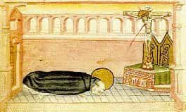

< < < Back
What Is The Essential Purpose Of Prayer? – Return Of Kings
Just as reverence becomes instinctual to man, we find that man also has the instinct to draw near to the Source of his being, to transcend himself. We perceive that God is closer to us than we are to ourselves, communicating being to us; thus, man acknowledges that whatever fear he may have of God, he cannot escape from himself, and his self is sustained at its root by God. We cannot escape; therefore, the only question is one of rightly relating to Him.
What is prayer?

As usual, I speak in terms of my Tradition, which I uphold as True; but others will be able to see how they apply to themselves; and certain of the more philosophical principles that shall be discussed in connection with the Theological Virtues, deal with truths of reason that apply universally.
There are levels of prayer. Today we will start with the general idea of prayer, and explore some of the simplest forms of prayer. I will follow, in large part, the discussion of the great Dominican priest, Fr. Garrigou-Lagrange. He defines prayer:
Prayer is an elevation of the soul to God, by which we temporally will that, which God eternally wills for us to seek from Him – namely, the various means of salvation, and chiefly progress in charity.
There is a lot to unpack, here. First, nothing in the above definition requires us to pray in words; prayer is an elevation of the soul that seeks conformity with God’s will. The Curé of Ars gave the example of a French peasant, whom he often observed gazing intently at the Eucharist, without moving or mouthing any words, for long periods of time. The Curé asked him what prayers or thoughts he composed to God at this time. “Oh, I don’t say anything; I just look at Him, and He looks at me.” The chief end of man is the Beatific Vision—the gaze into the Infinite God, penetrating ever deeper into layers of beauty and perfection that can never cease to build one upon another. Thus, the simple gaze of the soul upon God is already a temporal conformity of the will with the eternal end God wills for us.
Lagrange comments:
This is that interior prayer which was so often the prayer of the Christians of the catacombs and of all the Saints, long before modern treatises on meditation.
He goes on to explain that, for beginners, sometimes formulated prayers are helpful and even necessary—indeed, our Lord gave the Paternoster (the Lord’s Prayer)—because they help to focus a mind that may otherwise wander without words, and because they form the soul in the proper attitude and content of prayer. But if we allow formal and rote prayers to become long-winded, complex, etc., the simplicity of good prayer can often be lost. The Latin rite of the Church, especially, has tried to keep prayer simple, concise, and penetrating; it had a proverb: brevis oratio caelum penetrat – “a short prayer pierces heaven.”
Holy Tradition encourages the custom of meditating on these concise prayers, such as the Lord’s Prayer; this way, whenever one prays them, all the fruits of our rumination upon the prayer can be recalled in the brief time it takes to say them. For example, saying the Lord’s Prayer will evoke a rich panoply of sublime truths, if one says it after internalizing the fruits of such a meditation as this one.
Second, Fr. Garrigou-Lagrange’s definition upholds the sovereignty of God. Many people wonder what the point of prayer is. Are we really going to change God’s mind? Does He alter His perfect will and grant us what we want, instead, if we ask this of Him? Of course not. Two things are clear, here: first, the point of prayer is not to ask for any old thing we want (Lord, let the Cardinals win the Superbowl!). God has willed, that many of the things He wills shall come about through secondary causes such as our prayers. In our prayers, we strive to conform to His will. We will for “the means of salvation.”
Some material means of salvation may be granted at varying times and amounts – food, shelter, clothing, good health, etc. The most important of the means of salvation, however, is grace, which heals the soul and leads to an increase of virtues, especially that of charity. “Charity” is used nowadays in a weak sense; but really it is from Latin caritas, a translation of the Greek ἀγάπη (agape), which is perfect, self-sacrificing love. Because grace, charity, final perseverance, etc., are indispensable means of salvation, we know that if we pray for these things, they are infallibly granted. But, we must actually pray for them, and not merely wish for them. What is the difference?
Prayer and the theological virtues
A wish is a natural desire, but prayer is a supernaturally inspired and completed act.
“In order that it be an uplifting of the whole soul to God, prayer must be preceded by an act of humility, and must proceed from the three, Theological Virtues.”
The Theological Virtues are so called, because they are given by God and have God for their object (“theos” = God, in Greek). I will discuss them briefly, but for one to really understand them, he will have to do more reading. I will recommend Fr. Garrigou-Lagrange’s teaching, here.
The Theological virtues are Faith, Hope and Charity. The three of them really operate together, and there is a kind of unity between them. Indeed, where St. Paul speaks of faith, he mentions the unity of spiritual activity derived from it in a manner that includes all three Theological Virtues. “Without faith it is impossible to please God. For he that cometh to God, must believe that He is [Faith], and is a rewarder [Hope] to them that seek Him [Charity]” (Hebrews 6:11). They that seek, find; and this is why “these three abide: Faith, Hope and Charity; but the greatest of these is Charity” (1 Corinthians 13:13). Faith shall yield to sight, and Hope shall yield to fulfilment, but Charity increases forever.
In the more perfect, the fundamental acts of religion involved in prayer, seem to happen more or less simultaneously. Lagrange discusses them separately for the sake of beginners, so that we may understand more clearly what is happening in prayer.
Humility chips away at pride, which is the obstacle to God’s grace. “When we begin to converse with God, we should remember what we are. Of ourselves we can do nothing, and even less than nothing, for sin is a disorder inferior even to nothingness itself.” Bearing within ourselves something worse than nothingness, let us not presume; let us approach God with humility.
That done, we approach God in an act of faith, which can be a reflection on God Himself, His perfections and qualities, revealed truths and even our vocations and duties in life relative to God. “It is not necessary to spend much time in discursive thought, for the simple act of theological faith is superior to this. It becomes more and more a simple gaze,” as we saw with the peasant, earlier. “This ‘I believe’ seems at times to become an ‘I see;’ we see the fountain of life from afar.”
From this, arises hope; we see the fountain of water, now we long to drink of it. “As the hart panteth after the fountains of living water, so panteth my soul after Thee, O God.” What we see, we desire; we hope to attain unto it.
From this, we reflect that the Desired is good in Itself, not merely because of the benefit to us. We love the Good for its own sake, beyond thought of reward. “If in this act of love our feelings offer us their inferior assistance, we should accept it; it may be useful, if it remains subordinated, but it is not necessary since it vanishes in times of spiritual aridity. We are rather speaking of a calm but profound affection, which is surer and richer than superficial emotions. It expresses itself somewhat in this manner: ‘My God, I no longer wish to lie, saying that I love Thee; grant rather that I may love Thee and please Thee in all things.” Thus, this charity moves beyond the merely affective, and into the effective: a charity that is willing to strive to please its Object.
For many, especially beginners, this may still seem abstract. Next week, we will go over some formal prayers in the Christian Tradition, something a bit more tangible. But the point of all this is twofold:
1. To show what the heart of prayer is; the pure act of raising the soul to God and conforming our will with Him, humbly gazing on Him with the eyes of faith, desiring and hoping to attain the good we behold in Him, and moving beyond even the thought of reward, to love Him for the Good that He is, in and of Himself, with a love that is willing to endure what it must to be pleasing to Him.
2. To prepare us to see what should transpire in the soul, beyond the mere recitation of words, when we pray with formal prayers. With practice, prayer with words can prepare us for the simple, absolute form of prayer, if it seems too abstract at first.
Read More: Why Is Modern Christianity So Wimpy?